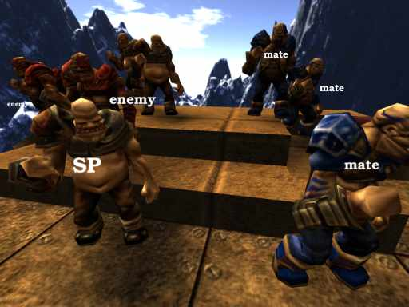

Introduction
Before you start to play online you should have taken some time to setup your game.
Settings
Apart from
having an appropriate graphics setup -
for maximum fps to keep the game fluid while online -
refer to the
Performance Guide for this;
you should also have
changed your name and team -
so other players can recognize you -
for which you should refer to the
Beginners Guide.
Ogro's Etiquette Reference
The Ogros have an evolutionary history, a society - hence some etiquette:
- End-Of-Match : traditional shorthand : "gg" ... for anything from "good game", "great game" to "gross gore". Say it, it's tradition! ;)
- TeamKill : When joined up into teams it's considered polite to mumble an excuse when having TK'd, even with some "lag" - as soon as the situation permits, actually.
- Voting : if a vote was called, but you prefer playing as is, say so too! No use to get people vote-flooding, because they're feeling ignored, eh?! If you are master talk to players about which maps they'd like to play!
- KickBan/Locked/MasterMode : masters shouldn't abuse their powers, players shouldn't nag masters - just accept it if a match allows you as SPECTATOR only!
- Join/Disconnect : it would be polite to annouce yourself on join with at least saying "hi", and "bye" before leaving.
Finding a Game
When running the game you can go to the multiplayer menu, and
update from the master server, this will then see the currently running games available to join to.
The
server browser displays enough basic information about a respective game to help you choose the right server for yourself. Take note of indicators for
private and
locked mastermodes (where it shows "
P" or "
L" next to number of players).
Game Modes
The game runs in a range of different modes. Internally they are mapped to the indexes [-2 .. 0 .. 13], with modes less than zero being the
Singleplayer modes. The modes all have their own little special flavour, so you have - in theory - 16 different games instead of just one. Well, okay, 15 games and a cooperative editing mode :)
The current multiplayer modes are 0-13, with the special
mode 1 - for coop-edit.
Singleplayer modes all have a negative index - also don't forget your aliases (like
sp,
ffa,
insta, ...)
For completeness we'll list the SinglePlayer modes here too, which of course aren't available during a multiplayer game.
»n«
|
name
|
description
|
-5
|
SlowMo-SP
|
slow-motion singleplayer - speed changes according to your health
|
-4
|
SlowMo-DMSP
|
slow-motion singleplayer deathmatch - speed changes according to your health
|
-3
|
DemoPlayback
|
this mode is used to playback demos - see Demo Recording
|
-2
|
SP
|
basic singleplayer
|
-1
|
DMSP
|
singleplayer deathmatch
|
Of course all (legal) modes are available via the voting menu.
»n«
|
name
|
description
|
0
|
ffa/default
|
Your basic fps-game mode. With items spawning, respawning, and players just fragging away. Actually ffa/default and ffa/duel aren't really different modes, rather they may be used to indicate a server either looking for players or already set up and fragging away. But this doesn't seem to be used much yet.
|
1
|
coopedit
|
Cooperative editing in-game, for more information on this mode, refer to the Cooperative Editing
|
2
|
ffa/duel
|
same as ffa/default
|
3
|
teamplay
|
basic teamplay mode
|
4
|
instagib
|
Your classic 1-shot-1-kill type of game, no items spawn in this mode - it's just movement and aiming that can keep you alive longer than your enemy. Players respawn right away after being fragged. Your only weapons are a rifle with 100 shots, and your fist - which does for quick frags when up close to your enemy, since it's "rate of fire" is more rapid.
|
5
|
instagib-team
|
teamplay instagib.
|
6
|
efficiency
|
You spawn with a random subset of ammunition, thus giving you a temporary assignment (especially in team mode) or simply forcing a certain tactical approach on you. Players respawn right away after being fragged.
|
7
|
efficiency-team
|
teamplay efficiency.
|
8
|
insta arena
|
Last-Man-Standing in instagib - see below
|
9
|
insta-clan-arena
|
teamplay instagib/Last-Man-Standing - see below
|
10
|
tactics arena
|
efficency Based Last-Man-Standing - see below
|
11
|
tactics-clan-arena
|
teamplay efficency/Last-Man-Standing - see below
|
12
|
capture
|
This is a completely different approach to your regular capture: For starters, frags are not counted at all. The goal is to keep certain bases under your control for as long as possible. Your team is continously awarded points for each base it has currently captured - the more bases you hold for a longer time the more your teams score will increase. If your team manages to capture all bases on the map the match is ended, otherwise it ends after the 15 minute timelimit. When you have been fragged you will stay in limbo for 10 seconds before attempting to spawn next to one of your teams bases, preferrably the one closest to your enemies. This mode is akin to the Domination mode found in Unreal Tournament.
|
13
|
instacapture
|
capture with instagib
|
14
|
regencapture
|
like capture but without a respawn timer and the bases you own regenerate your health, armour and ammo when you stand close
|
15
|
assassin
|
your assigned target (red skin) is worth a point, friendlies cost you a point and all others count for nothing
|
16
|
insta assassin
|
the assassin mode as instagib
|
The
arena modes differ from their respective basic modes (tactics is based on efficiency) by players not respawning directly after being fragged. Rather each round will only end when a
last-man-standing has beaten all other players, then a new round starts. Currently you are completely motionless when fragged and waiting for a new round to start.
Do not worry, there a some nice aliases defined to keep you from remembering these numbers off by heart (see the
voting aliases). There are far more modes available than in most FPS games, so there should be a type of game for any player preference.
With exception of the Capture mode - which requires the map to contain bases to capture - you can play any mode on any of the maps available, although some may be better suited to one mode more than another.
Team mode matches have a timelimit of
15 minutes, all other matches end after
10 minutes.
Changing Modes and Maps
When playing online you can change the current mode and current map being played by voting for a new game. This is done either via the menu or by simply typing the command to the console (which is easier to show here).
/insta curvedm
Or in full..
/mode 4; map curvedm
This will vote for an
instagib match on the map
curvedm ("Curves That Kill").
The predefined aliases of release 2006-12-04 are:
sp = [ mode -2; map $arg1 ]
dmsp = [ mode -1; map $arg1 ]
ffa = [ mode 0; map $arg1 ]
coop = [ mode 1; map $arg1 ]
insta = [ mode 4; map $arg1 ]
capture = [ mode 12; map $arg1 ]
Master Mode
The MASTER is in control of the game.
MasterMode can be set to :
- 0 : OPEN - no special features
- 1 : VETO - if the MASTER votes, the vote is automatically accepted
- 2 : LOCKED - future connects go into SPECTATOR
- 3 : PRIVATE - future connects are disabled
Only the MASTER is able to move SPECTATORS back into the game or KICK people.
A kicked player will not be allowed to reconnect until the server goes empty thus emptying the ban-list or until the master issues the command
clearbans manually.
The master has a range of commands at his disposal :
- setmaster 1|0 : claim or relinquish MASTER
- mastermode 0|1|2|3 : set the mastermode (see above)
- spectator B N : with 1 for on, 0 for off will set/unset SPECTATOR for player N.
- setteam N T : forcibly sets player N on team T
- kick N : kick a player by name or client-id (visible for MASTER on score-table)
If you are MASTER you will see the clients ID behind their names on the scoreboard,
other players will see your name in green so they know who is MASTER.
The MASTER should use his powers wisely.
Don't kick people randomly and don't switch map/mode without a good reason - especially if the other players are busy enjoying the current game. Even though you can use your VETO power to overrule everybody else. If you abuse your powers, chances are the players will change to another server to free themselves from your oppressive rule.
Team Modes
All multiplayer ogros/ironsnouts are either enemies or teammates.
The red ones are enemies,
the blue ones are on your team.
In
capture mode this is also true for the radar blips.
Team names are just that, even if you are on
team red your team-mates show up in blue!
Currently the two default teams are
good and
evil.

In certain cases you will be auto-assigned to a team,
so be sure not to be too fixed on certain playernames ... shoot the red guys!
SP:SinglePlayer .. you'll never fight one of these in a multiplayer match
Note : the ogro will be replaced by ironsnout in the release after 2007-05-13 ("spring").
Server Hosting
Setup
If you want to host your own server you should be sure to have setup your network accordingly.
To enable access from a WAN (read internet) your routing needs to forward the games ports (see below); for LAN gaming see the following section about
local network gaming.
Player VS. Speed
A home DSL connection upstream is rumoured to be sufficient to host a 6-player-server, this is currently standard for a server without stating another number in the passed parameters ("-cX" for X players), it used to be 4 before we got a good overhaul on the network code, which slimmed down the packets nicely. Another feat brought to you by the dilligent team of developers behind your favourite multiplayer fps game!
Configuration
For a complete list of parameters always check the documentation:
docs/config.html under section
command line options,
also read up on stuff you can do in
docs/game.html (bottom).
Take note of the possibility to set a master-password, which will give you MASTER even though somebody else already is. Because you know the servers master-password. Use comand line param
-pS for this, where "
S" is your password, this is never sent to any clients.
If you are unsure as how to setup your network & firewall correctly, there are some useful hints in the following paragraphs. We can't explain every little detail about this complex subject and encourage you to use the rest of the documentation for additional help!
Public or Private?
If you do not want your server to be registered on the masterserver then simply point it to a non-working masterserver, most common would be
-mlocalhost. By default the official masterserver is contacted and will, if traffic is found possible, then add your server for everbody updating their serverbrowser menu.
Router and Ping Response
If you get a message like "
server did not respond to ping" your ports aren't being forwarded correctly yet. On the forum a lot of router issues were resolved by pointing to portforward.com. Unfortunately a number of ISPs seem to hand out routers that are incapable of forwarding ports, if you have been given such a device you will, sadly, not be able to host a server.
The UDP ports you need to forward (or DNAT) to your local box (running the server) are
28785 and
28786.
LAN Play
On your LAN the limit of players will probably only depend on the processing power of the hosting server. Use the "-cX" parameter to enable a maximum of X players, the default assumes a WAN setup, so is far lower than you'd like. The clients can use:
/lanconnect
To connect to this server easily.
If you are preparing for a LAN-party you might want to take some time to distribute common keybindings and/or integrate this into the menu for all players.
Internet Play
If you are playing on the internet you should be aware that sometimes players might be cheating.
This is a problem that arises with every game to some degree, open source makes this issue maybe even more relevant.
The way to protect from cheaters, or simply keeping "your" game under control - is using a MASTER.
The MASTER player will be colourized in the SCORE table, so you can contact this player in case you have any issues with the current game.
Voting can be forced by the MASTER (requires mastermode 1 (VETO)), the MASTER can also set the game to be LOCKED (future connects go directly into SPECTATOR) or even set the game to PRIVATE mode, which bans all future connects. See the
MASTER description for details.
Regular voting works by somebody calling a mode and map - which will be output on every players console.
If you agree you should simply call the same mode/map combination (e.g. via the multiplayer menu or by typing in manually). As soon as more than 50% of the players have agreed the game will switch to the desired mode/map combination.